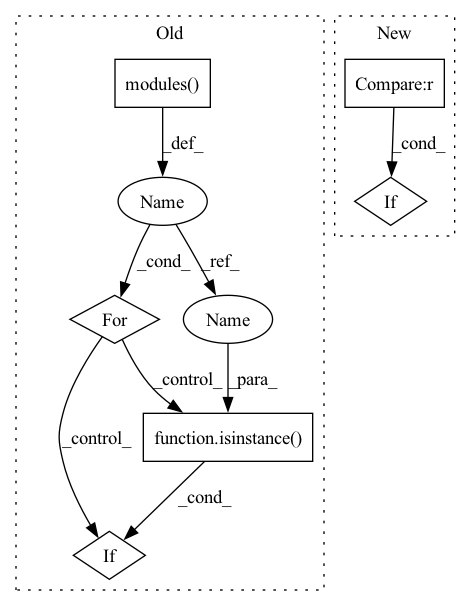

Pattern ID :33725
Before Change
bias_value = 0
for modules in self.loc:
for l in modules.modules():
if isinstance(l , nn.Conv2d) :
torch.nn.init.normal_(l.weight, std=0.01)
torch.nn.init.constant_(l.bias, bias_value)
import mathAfter Change
self.backbone = ResNetBackbone(depth=18, pretrained=True)
channels = (256, 512)
self.fea_channel = 256
elif backbone == "resnet34" :
from models.backbone.resnet_backbone import ResNetBackbone
self.backbone = ResNetBackbone(depth=34, pretrained=True)
channels = (256, 512)In pattern: SUPERPATTERN
Frequency: 3
Non-data size: 6
Instances Fragment ID: 96984789
Project Name: zhanghengdev/mutualguide
Commit Name: a1922567db242ed73012d090b249066d1159a902
Time: 2021-06-01
Author: heng.zhang@irisa.fr
File Name: models/detector.py
M Class Name: Detector
N Class Name: Detector
M Method Name: __init__(5)
N Method Name: __init__(5)
M Parent Class: nn.Module
N Parent Class: nn.Module
M File Name: models/detector.py
N File Name: models/detector.py
M Start Line: 33
M End Line: 88
N Start Line: 44
N End Line: 103
Before Change
prior_prob = 0.01
bias_value = -math.log((1 - prior_prob) / prior_prob)
for modules in self.conf:
for l in modules.modules():
if isinstance( l, nn.Conv2d) :
torch.nn.init.normal_(l.weight, std=0.01)
torch.nn.init.constant_(l.bias, bias_value)
After Change
self.backbone = ResNetBackbone(depth=18, pretrained=True)
channels = (256, 512)
self.fea_channel = 256
elif backbone == "resnet34" :
from models.backbone.resnet_backbone import ResNetBackbone
self.backbone = ResNetBackbone(depth=34, pretrained=True)
channels = (256, 512) Fragment ID: 96984784
Project Name: zhangheng19931123/mutualguide
Commit Name: a1922567db242ed73012d090b249066d1159a902
Time: 2021-06-01
Author: heng.zhang@irisa.fr
File Name: models/detector.py
M Class Name: Detector
N Class Name: Detector
M Method Name: __init__(5)
N Method Name: __init__(5)
M Parent Class: nn.Module
N Parent Class: nn.Module
M File Name: models/detector.py
N File Name: models/detector.py
M Start Line: 33
M End Line: 88
N Start Line: 44
N End Line: 103
Before Change
self.pi = nn.Linear(hidden_dim,action_dim)
self.actor_logstd = nn.Parameter(torch.zeros(1, action_dim))
for layer in self.modules():
if isinstance( layer, nn.Linear) :
nn.init.orthogonal_(layer.weight)
layer.bias.data.zero_()
After Change
def __init__(self, layer_num, input_dim, output_dim, hidden_dim, activation_function = torch.tanh,last_activation = None, trainable_std = False):
super(Actor, self).__init__(layer_num, input_dim, output_dim, hidden_dim, activation_function ,last_activation)
self.trainable_std = trainable_std
if self.trainable_std == True :
self.logstd = nn.Parameter(torch.zeros(1, output_dim))
def forward(self, x):
mu = self._forward(x) Fragment ID: 96984799
Project Name: seolhokim/mujoco-pytorch
Commit Name: 0ce335459ae78887c789686fc20f23c207637d14
Time: 2021-05-12
Author: kilmya1@naver.com
File Name: networks/network.py
M Class Name: Actor
N Class Name: Actor
M Method Name: __init__(8)
N Method Name: __init__(4)
M Parent Class: Network
N Parent Class: nn.Module
M File Name: networks/network.py
N File Name: networks/network.py
M Start Line: 6
M End Line: 18
N Start Line: 8
N End Line: 13